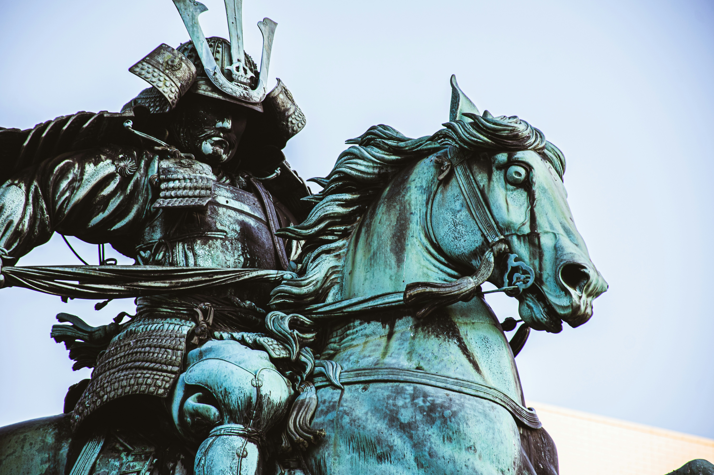
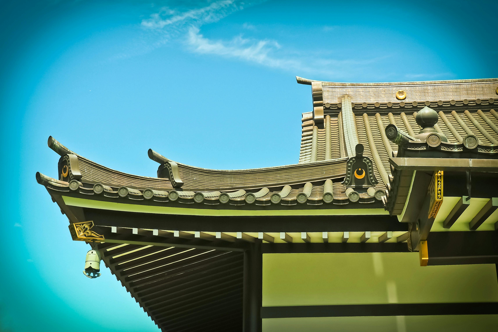

Here are some images
-  statue of a samurai
-  landscapes of Japan
 landscapes of Japan
landscapes of Japan reenactment of a samurai
reenactment of a samurai
Samurai were a class of highly skilled warriors that arose in Japan after the Taika reforms of A.D. 646. The reforms forced many small farmers to sell their land and work as tenant farmers. To defend their riches, Japanese feudal lords hired the first samurai warriors.
 landscapes of Japan reenactment of a samurai
landscapes of Japan reenactment of a samurai